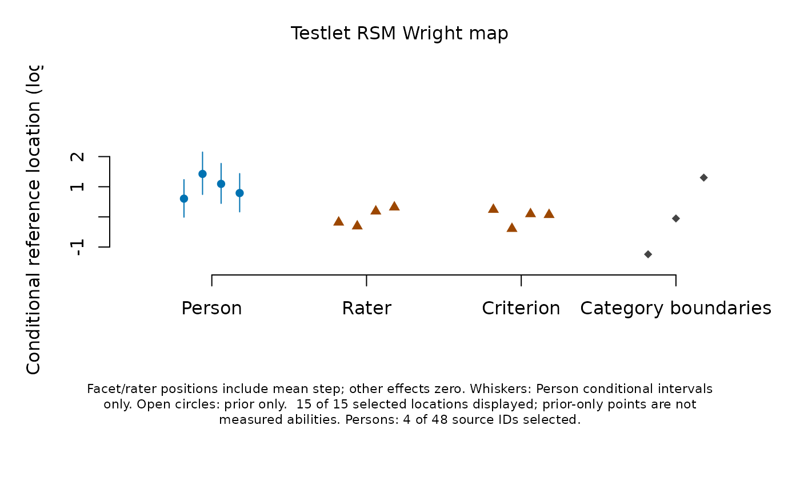
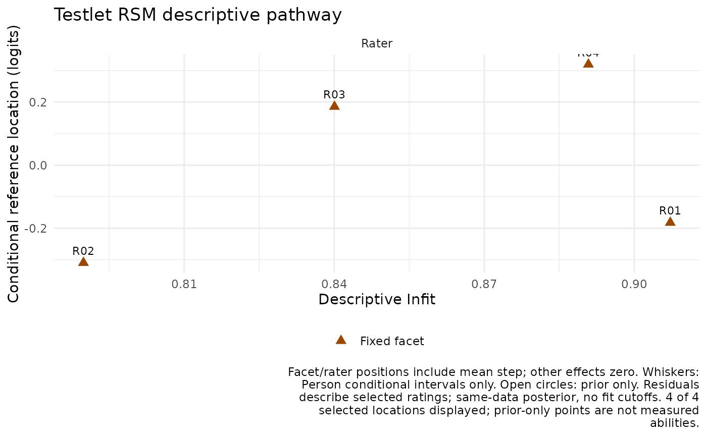

Plot a saved mfrm_results() object using type = "wright" or
type = "fit_pathway". These routes support testlet and shared-rater models;
ordinary-model maps keep their existing definitions.
Locations and their meaning
The fitted equation is log(P(k)/P(k-1)) = ability + local effect - sum(facet severities) - step(k). A fixed facet's displayed location is its severity plus the unweighted mean of the fitted steps. It is the mean adjacent-category boundary when all other facet severities and local effects are zero. It is not the ability producing the middle expected score. Shared raters use the fitted conditional rater mode plus that step mean; replacement-rater marginal predictions are a different target. A testlet effect is Person-local and has no separate global facet column.
Person positions are saved conditional EAPs on the fitted mean-zero ability
scale. The separate category-boundary column shows fitted steps at zero
facet/local effects. These locations are conditional references: integrating
latent effects does not generally preserve these category crossings.
SourceEstimate and StepCenter retain each transformation in plot tables.
Do not add displayed facet locations to obtain a combined rating boundary:
this would count the mean step repeatedly. Use the fitted equation instead.
Whiskers, when requested, show only Person conditional intervals.
Composite facet/step uncertainty is not obtained by shifting an existing
facet interval; use the separate estimate plots for their original targets.
Saved inputs
Supply source-roster scores through mfrm_results(fit, scores = scores)
for either extension (testlet predictions = scores remains supported).
Calculate them explicitly using score_mfrm_persons(). Wright maps require
matching scores; older testlet scores without scoring_data need rescoring,
not refitting. The source calibration and complete rating-event multiset
must match. Shared-rater scores computed from a reduced roster cannot be
combined with rater modes from the full fitted roster.
Pathways also require separately saved mfrm_response_diagnostics() output.
fit_stat = "Infit" (default) or "Outfit" chooses the horizontal axis;
the vertical axis uses the locations defined above. Selected-row counts and
full-roster conditioning are retained. A residual index for a subset of
ratings describes that subset, not the group's entire workload. Missing or
unresolved indices remain in tables but cannot be drawn. No expectation-one
line, acceptance band, ZSTD, bias test or rater-quality classification is used.
A pathway can display fixed facets/raters without Person scores.
Display controls
facet = NULL shows all available location panels in a Wright map and
all located diagnostic groups in a pathway; supply fitted column names to
select panels. persons = NULL retains all saved Person scores; a character
vector selects saved IDs without rescoring. show_steps = TRUE includes
the separate Wright category column; steps do not appear in pathways.
show_intervals = TRUE shows available Person conditional intervals.
show_labels defaults to FALSE for Wright maps and TRUE for pathways;
set it to FALSE for crowded pathways. palette is
"accessible" or "mono"; shapes also distinguish the location types
and prior-only results. A prior-only point is not a measured ability.
title/caption replace defaults; show_title/show_notes hide annotations
without removing interpretation metadata. text_scale and point_size
change sizes, and draw = FALSE returns saved plot data. as_ggplot()
preserves these choices and supplies alternative text. Plot tables retain
all selected unavailable rows; locations also retains undisplayed panels.
No fitting, scoring or integration is performed during plotting/export.
Examples
example <- readRDS(system.file("examples", "extended-models.rds", package = "mfrmr"))
res <- mfrm_results(example$testlet$fit,
scores = example$testlet$scores,
response_diagnostics = example$testlet$diagnostics, compute = "never")
plot(res, type = "wright")

pathway <- plot(res, type = "fit_pathway", facet = "Rater", draw = FALSE)
if (requireNamespace("ggplot2", quietly = TRUE)) as_ggplot(pathway)
